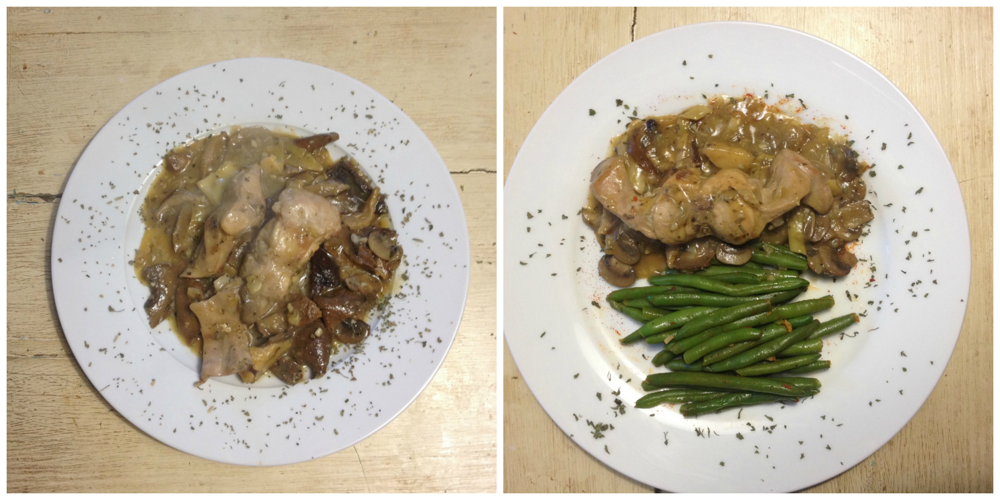
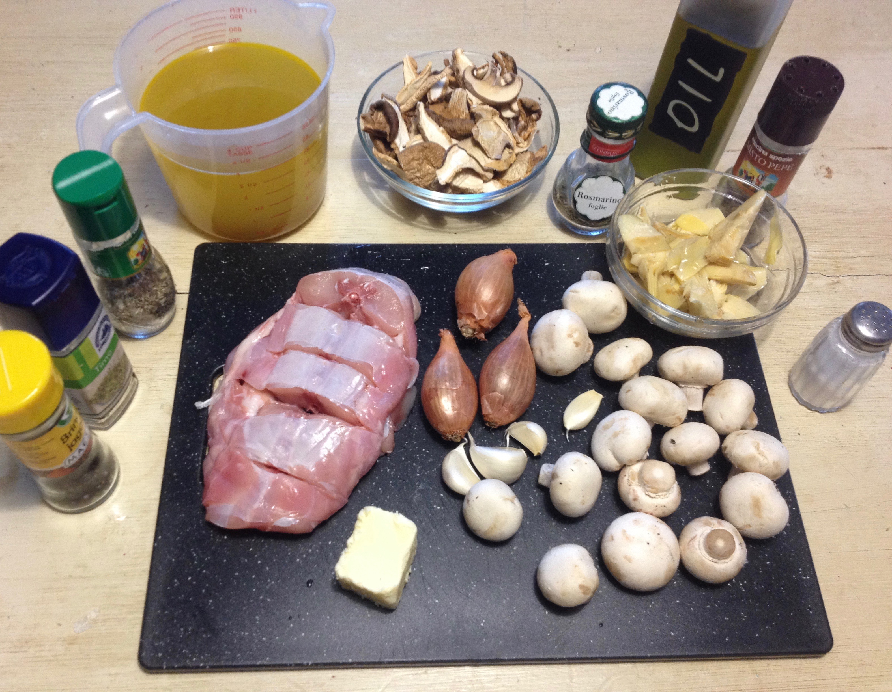
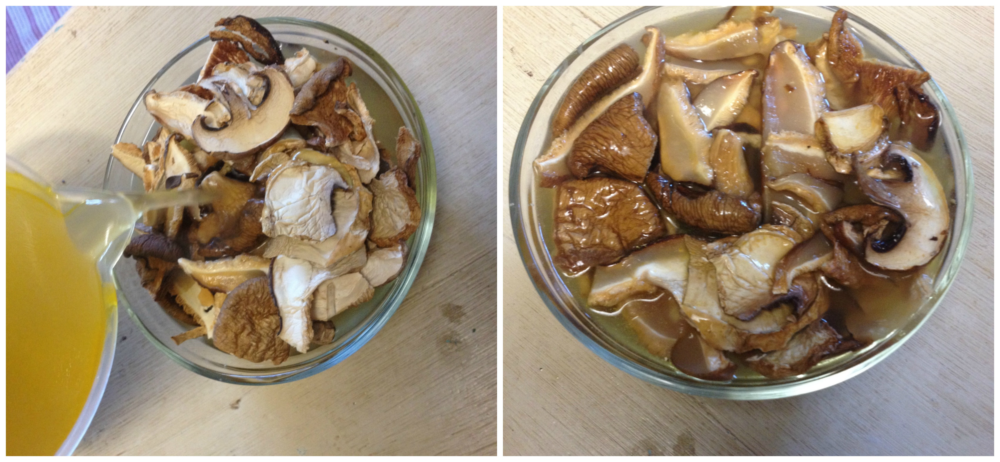
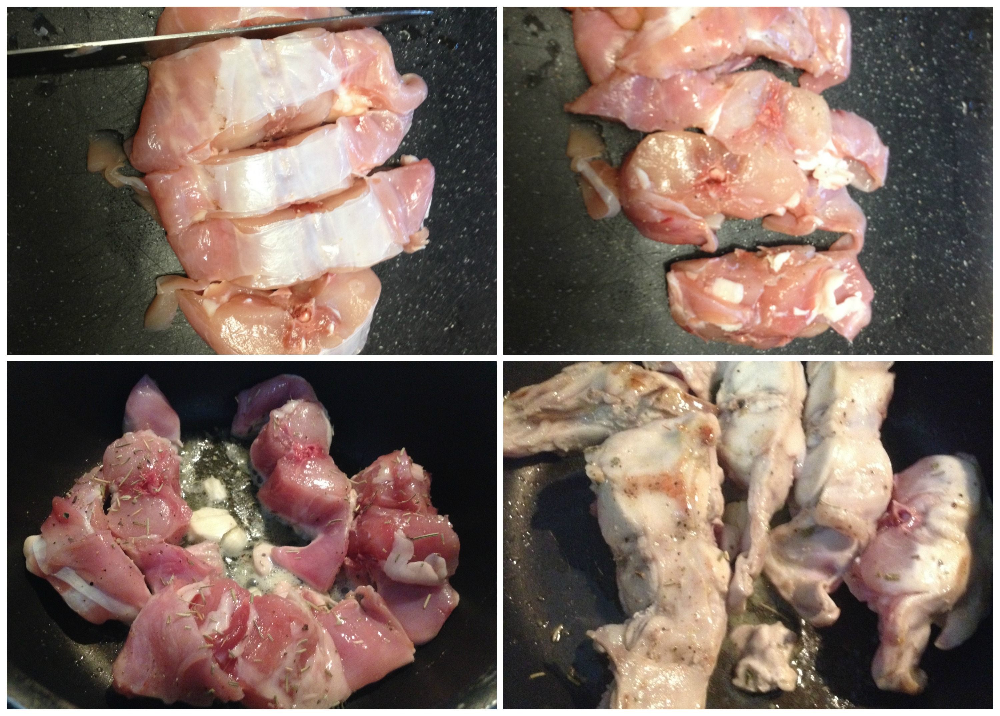
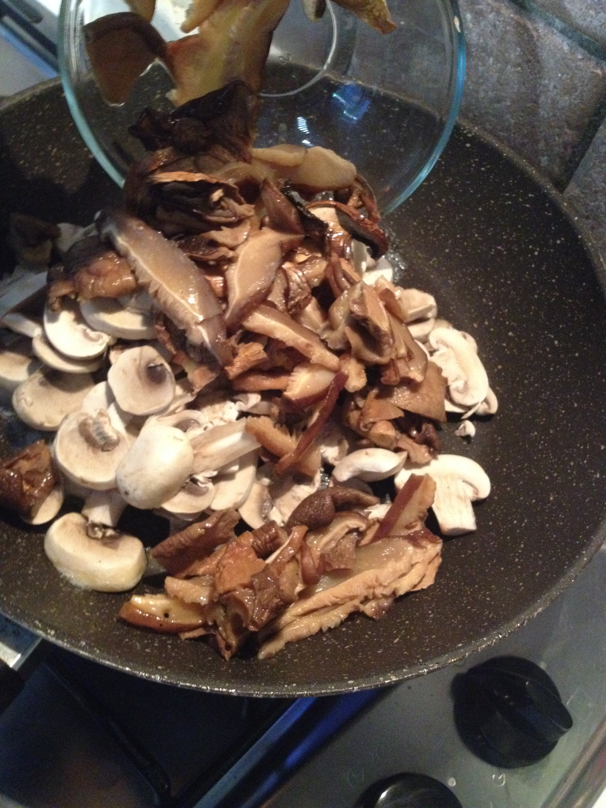
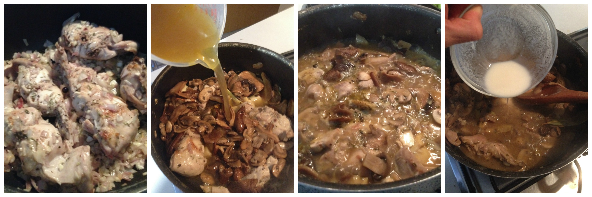

Rabbit with mixed mushrooms and artichokes¶

- Serves: 4
- Type: main
Background¶
Today’s holiday. I had a rabbit loin to cook and I was thinking to do something different than Rabbit with mustard sauce. So, I decided to look for new recipes online... but after pressing enter my screen was full of cute-fluffy bunnies pictures. Oh dear!, how I will continue with my programs!It was challenging, in one hand guilt feelings and in the other hunger. I decided to continue with my original plans after my boyfriend and I had a talk about life. I found different recipes and all of them seemed tasty so I decided to take the best part of each of one and make my own one. I have to say it was so tasty and so far I will use it more often (if I will decide to eat rabbit again). My advice is: to be precise when googling for recipes that involves cute fluffy animals.
Ingredients¶
Ingredients
- 1 rabbit loin (his back)
- 40 grams mix dried mushrooms
- 3 shallots
- 2 diced garlic cloves
- 1 garlic clove (entire)
- 3 cups hot vegetable broth
- 1 teaspoon dry thyme
- 1 teaspoon dry sage
- 1 teaspoon dry rosemary
- 1 tablespoon dry parsley
- 4 juniper berries
- 150 - 200 grams champignons sliced
- 8 or more slices artichokes marinated in oil
- Olive oil
- Salt and pepper to taste
- 2 tablespoons butter
- 1 tablespoon all purpose flour
- 3 hot water tablespoons
Steps¶
Soak the dried mushrooms in the hot vegetable broth for a least 10 minutes
Soaking the dried mushrooms
Cut in pieces the rabbit loin, salt the rabbit and add some pepper, preferably freshly ground pepper. Sprinkle some dry rosemary and sage
Heat a large pot and melt the butter and pour a trickled of oil.
Add the garlic clove and the rabbit together with the juniper berries.
Brown the rabbit for all sides checking that the garlic will not burn
Browning the rabbit
Strain the dried mushroom water and save the broth. Dice in small pieces the rehydrated mushrooms.
Heat a fry pan and add some butter. Sauté both the rehydrated mushrooms and the champignons, stirring continuously till they release their water.
Sautéing the mushrooms
In the meanwhile add into the rabbit the diced shallots and garlic. Blanch the shallots carefully stirring frequently. Cover with the lid for 3 minutes.
Add the artichokes and stir fry all together for another minute.
Pour the vegetable/mushroom soaking liquid in the pot, add the dried thyme and bring to simmer and cook uncovered until a quarter (25%) of the liquid remains (15-20 minutes approximately).
Separately dissolve the flour in hot water and pour it into the pot, remove and serve after a minute of boiling.
Simmer the rabbit in vegetable broth
Serve and enjoy
Can be served with¶
- Green beans: Green beans sauté
- Polenta
- Potato purée
- Cooked vegetables
- White rice